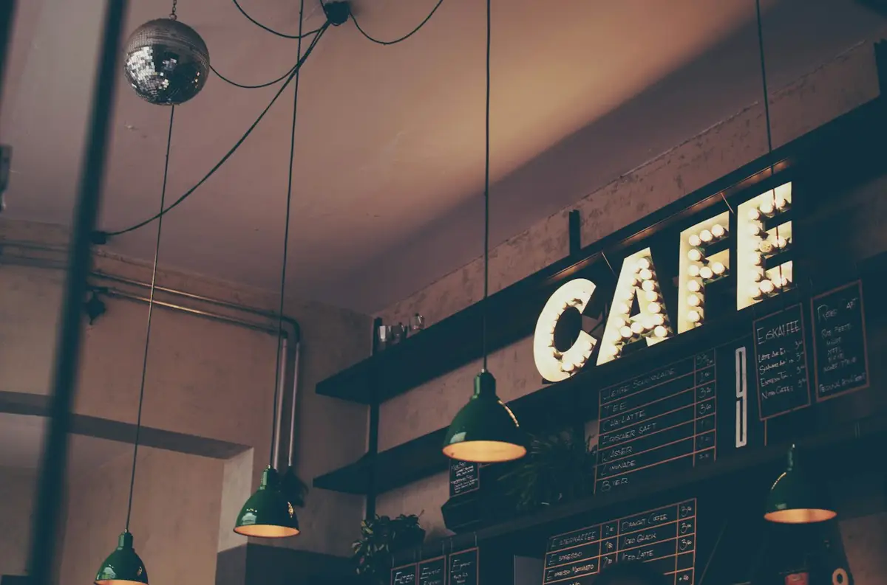

Flat white
Espresso with silky steamed milk.
Coffee made with care, a seasonal kitchen and a neighbourhood table worth coming back to.
The all-day menu
Choose what fits, then add your details. We confirm scope and availability with you.

Espresso with silky steamed milk.
A clean, full-bodied cup.
Espresso, oat milk and ice.
Sourdough with seasonal toppings.
Golden, flaky and baked for slow mornings.
Ask about the cake of the day.
Fictional demo: images are illustrative stock references. Any prices, schedules and listings shown are examples, not live offers.

Solo coffee, a catch-up or a small gathering. Ask us about a table before you visit.
Share your group size and preferred date so we can discuss a suitable arrangement.
Solo coffee, a catch-up or a small gathering. Ask us about a table before you visit.
This is a fictional design demo. The form previews the enquiry flow and does not send or store your details. Use the link to Ruhaan to discuss making this design your own.
Solo coffee, a catch-up or a small gathering. Ask us about a table before you visit.
Try this form with sample details. It previews an enquiry only—nothing is sent, stored or booked.
Ask Ruhaan for this website ↗